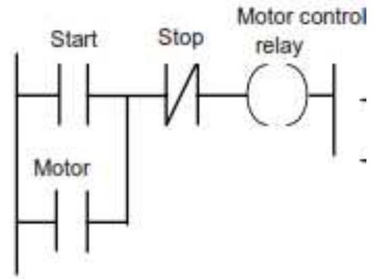
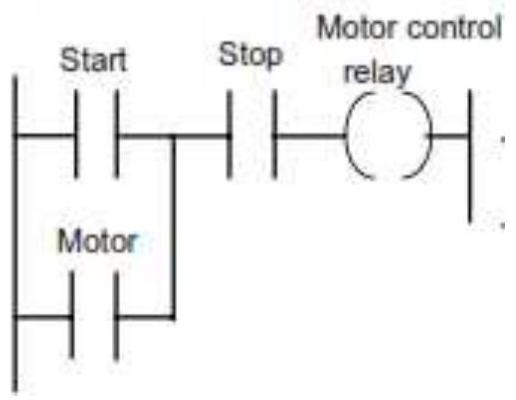
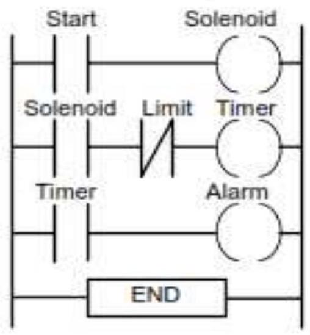

A peripheral is a device that is connected to a host PLC, but not part of it. It expands the host's capabilities but does not form part of the core PLC architecture.
Peripheral devices to the PLC and its I/O base(s) can be anything from a host computer and controls console to a motor drive unit or field unit switch.
Printers end industrial terminals used for programming are also peripheral devices.
These external operating devices, with their sometimes harsh and/or fast signal characteristics, must be able to interface with the PLC's sensitive microprocessor.
There are three different types of peripherals:
•Input, used to interact with, or send data to the computer/ PLC (mouse, keyboard etc)
•Output, which provides output to the user from the PLC/computer (Monitors, printers, displays etc)
•Storage, which stores data processed by the computer (Hard drives, flash drives etc)
1) Printers
In computing, a printer is a peripheral which produces a representation of an electronic document on physical media such as paper. Many printers are local peripherals connected directly to a nearby personal computer. Individual printers are often designed to support both local and network connected users at the same time. Most Multifunction printers (MFPs) include printing, scanning, and copying among their many features.
Printers can be classified by the printer technology they employ, with many techniques being available as commercial products.
The choice of print technology has a great effect on the cost of the printer and cost of operation, speed, quality and permanence of documents and noise.
A second aspect of printer technology that is often forgotten is resistance to alteration: liquid ink, such as from an inkjet head or fabric ribbon, becomes absorbed by the paper fibers, so documents printed with liquid ink are more difficult to alter than documents printed with toner or solid inks, which do not penetrate below the paper surface.
2) Network interface controller (NIC)
NIC also known as network interface card, network adaptor is a computer hardware component that connects a PLC to a computer network.
It is an expansion card that allows PLC/computers to communicate over a computer network
The network controller implements the electronic circuitry required to communicate using a specific physical layer end data link layer standard such as Ethernet, WI-FI or token ring.
This provides a base for a full network protocol stack, allowing communication among small groups of PLC/computers on the same LAN and large - scale network communication through routable protocols such as IP.
The NIC may use one or more of two techniques to indicate the availability of packets to transfer.
•Polling is where the CPU examines the status of the peripheral under program control
•Interrupt - driven I/O is where the peripheral alerts the CPU that it is ready to transfer data.
and may use one or more of two techniques to transfer packet data:
•Programmed input/output is where the CPU moves the data to or from the designated peripheral to memory.
•Direct memory access is where an intelligent peripheral assumes control of the system bus to access memory directly. This removes load from the CPU but requires more logic on the card. In addition, a packet buffer on the NIC may not be required and latency can be reduced.
3) Programmer interface
The programmer interface in the industrial design field of human machine interaction, is the space where interaction between human and machine occurs.
The goal of this interaction is effective operation and control of the machine on the user's end, and feedback from the machine which aids the operator in making operational decisions.
Examples of this broad concept of user interfaces include the interactive aspects of computer operating systems, hand tools, heavy machinery operator controls, and process controls.
The user/programmer interface includes hardware (physical) and software (logical) components
It provides a means of
-Input, allowing the user to manipulate a system
-Output, allowing the system to indicate the effects of the user's manipulation.
Generally, the goal of human-machine interaction engineering is to produce a user interface which makes it easy, efficient, and enjoyable to operate a machine in the way which produces the desired result. This generally means that the operator needs to provide minimal input to achieve the desired output, and also that the machine minimizes undesired outputs to the human.
With the increased use of personal computers and the relative decline in societal awareness of heavy machinery, the term user interface is generally assumed to mean the graphical user interface, while industrial control panel and machinery control design discussions more commonly refer to human-machine interfaces.
üõ°Ô∏èPLC Systems and safety
An important standard is IEC (International Electro-technical Commission) 61508: functional safety of electrical/electronic programmable electronic safety-related systems.
In order to provide functional safety of a machine or plant, the safety-related protective or control systems must function correctly and when a failure occurs it must operate so that the plant or machine is brought into a safe shut-down state.
⚠️Fail-safe design
Safety must be a priority in the design of a PLC system. Thus emergency stop buttons and safety guard switches must be hard wired and not depend on the PLC software for implementation so that in the situation where there is a failure of the stop switch or PLC, the system is automatically safe. The system must be fail-safe.
Fail-safe design is a method of designing control system such that if a critical component in the system fails, the system immediately becomes disabled.
Hence, fail-safe design is the procedure or programming to ensure safety of the operator and processes.
Fail-safe design rules of thumb for selecting No or NC devices are as follows:
•NO - when wiring switches or sensors that start actions, use normally open switches so there is a problem with the switch the process will not start.
•NC - When wiring switches that stop process use normally closed switches so if they fail the process will stop.
The following program, START will override STOP and RUN will switch on as long as START is pressed.

Unsafe start/stop program
With a PLC system, a stop signal can be provided by a switch as above
This arrangement however is unsafe as an emergency stop because if there is fault and the switch cannot be operated, then no stop the system.
What is required is a system that will still stop if a failure occurs in the stop switch.
The program has the STOP switch as the open contacts. However, because the hardwired stop switch has normally closed contacts then the program has the signal to close the program contacts.

Pressing the stop switch (Safer Design)
üìàPhases of creating a PLC system
This involves fives phases; design, selection and supply, programming, installation, commissioning.
1. Phase 1 - Design
This is the designing of the system installation which include communication systems. In this stage, it shows all design basis documents, now the system will be constructed and commissioning of the same.
2. Phase 2 - Selection and Supply
After the planning phase of the design, the equipment can be ordered. The first decision is the type of controller rack, mini, micro or software based. The decision will depend on:-
•Number of logical inputs and outputs
•Memory size
•Number of special I/O modules
•Method/techniques of communication - serial and networked communication allow the PLC to be programmed and talk to other PLC
•Availability of programming software and other tools that determine the programming and debugging
•Scan time - the shorter the scan time the higher the cost.
The process of selecting a PLC follows the following steps
-Understand the process to be controlled
-Select the vendor/seller of PLC modules
-Plan the ladder logic for the control
-Count the program instructions and enter the values into the sheet.
3. Phase 3 - Programming
This stage involves programming the PLC, depending on the language used. It will also depend on the type of programmer available.
i)PLC software for personal computers - Similar to the specialized programming units, but software runs on a multiuse, user supplied computer. This approach is typically preferred.
ii)Hand held units (or integrated) - allow programming PLC using a calculator type interface. Often done using mnemonics.
iii)Specialized programming units - effectively a portable computer that allows graphical editing of the ladder logic, and fast uploads/downloads/monitoring of the PLC
4. Phase 4 - installation
This stage involves installing and placing all components of PLC system hardware and software in compliance with the design document. It entails the following phase/steps:
i)Panel/cabinet installation - The panel/cabinet installed should allow enough space for air circulation. Do not install PLC above equipment that generate large amount of heat. Do not install the PLC in a panel or cabinet with high voltage equipment. Provide a clear path for operation and maintenance.
ii)Installation of CPU unit and I/O unit - The small PLC must be installed in the horizontal position for the big PLC before installing; the units have to be compiled one by one. To build a rack PLC, provide back plane (Back plane is a simple device having two functions. The first is to provide physical support for units to be mounted to it. The second is to provide the connectors and electrical pathways necessary for connecting the units mounted to it.
iii)Installing the expansion unit or expansion I/O unit - expansion I/O unit are usually attached when amount of the devices to be controlled increase its amount over than capabilities of the existing I/O unit or attached when needed to a special need like temperature sensor. Insert the expansion I/O units connecting cable into the CPU units or expansion I/O unit expansion connector.
iv)Installing I/O devices - I/O devices are attached at the place has been determined in the work plan and wiring diagram. For switches are usually attached at the panel while the sensor, solenoid and motor is usually placed at the machine to be controlled.
v)Wiring and connection - Hanging ducts is used if power cables carrying more than 10A 400 v or 20A 220 V must be run alongside the I/O wiring (that is in parallel with it); at least 300 mm must be left between the power cables and the I/O wiring. Ensure proper grounding of all electrical installation. All electrical rack and machine element should be grounded to a central ground bus.
5. Phase 5 - Commissioning
Commissioning of a PLC system involves
•Checking that all the cable connection between the PLC and the plant being controlled are complete, safe and to the required specifications and meeting standards.
•Checking that the incoming power supply matches the voltage setting for which the PLC is set.
•Checking that emergency stop buttons work.
•Checking that all protective devices are set to their appropriate trip settings.
•Checking that all I/O devices are connected to the correct I/O points and giving the correct signals.
•Loading and testing the software.
üõ†Ô∏èFault finding
With any PLC controlled plant, the major faults are likely to be with sensors, actuators and wiring rather than within the PLC itself.
Of the fault within the PLC, most likely to be in the I/O channels or power supply rather than in the CPU
For example, consider a single output device failing to turn on though the output LED is on. If testing of the PLC output voltage indicates that its normal then the fault might be a wiring fault or a device fault. If checking of the voltage at the device indicates the voltage there is normal then the fault is the device.
Many PLCs provide built-in fault analysis procedure which carries out self-testing and display fault codes, with possibly a brief message, which can be translated by looking up the code in a list to give the source of the fault and possible methods of recovery.
Fault detection technique
The following are some of the common fault detection techniques used.
i)Timing checks - The term watchdog is used for a timing check that is carried out by the PLC to check that some function has been carried out within the normal time. If the function is not carried out within the normal time, then a fault is assumed to have occurred and the watch dog timer trips, setting off an alarm and perhaps closing down the PLC. As part of the internal diagnostic of PLC, watchdog timers are used to detect for faults.

Watchdog Timer Ladder Example
Time check can also be built into the ladder logic program. This is where additional ladder rungs might included so that when a function starts, a timer is started. If the function does not complete when the timer finishes a fault is signaled.
ii)Last output set - This technique involves the use of status lamps to indicate the last output that has been set during a process which has come to a halt. Such lamps are built into the program so that as each output occurs a lamp comes on. The lamps on thus indicate which output are occurring. The program has to be designed to turn off previous status lamps and turn on a new status lamp as each new output is turned on.
iii)Replication - replication check involves duplication i.e. replication, the PLC system. This could mean that the system repeats every operation twice and if it gets the same result it is assumed there is no fault. This procedure can detect transient fault. Alternatively, is to have duplicate PLC systems and compare the results given by the two systems. In the absence of the fault the two results should be the same, a fault showing up as a difference.
iv)Expected values checks - Software errors can be detected by checking whether an expected value is obtained when a specific input occurs. If the expected value is not obtained then a fault is assumed to be occurring.
üîßInstallation and Maintenance
The design of programmable controllers includes a number of rugged features that allow PLCs to be installed in almost any industrial environment.
System layout is the conscientious approach to placing and interconnecting components not only to satisfy the application, but also to ensure that the controller will operate trouble free in its environment.
In addition to programmable controller equipment, the system layout also encompasses the other components that form the total system. These components include isolation transformers, auxiliary power supplies, safety control relays, and incoming line noise suppressors.
Although programmable controllers are tough machines, a little foresight during their installation will ensure proper system operation.
In a carefully constructed layout, these components are easy to access and maintain. Nevertheless, careful installation planning can increase system productivity and decrease maintenance problems.
The best location for a programmable controller is near the machine or process that it will control, as long as temperature, humidity, and electrical noise are not problems.
Placing the controller near the equipment and using remote I/O where possible will minimize wire runs and simplify start-up and maintenance
Programmable controllers are designed to be easy to maintain, to ensure trouble-free operation. Still, several maintenance aspects should be considered once the system is in place and operational. Certain maintenance measures, if performed periodically, will minimize the chance of system malfunction.
Preventive maintenance of programmable controller systems includes only a few basic procedures, which will greatly reduce the failure rate of system components.
Preventive maintenance for the PLC system should be scheduled with the regular machine or equipment maintenance, so that the equipment and controller are down for a minimum amount of time.
However, the schedule for PLC preventive maintenance depends on the controller's environment-the harsher the environment, the more frequent the maintenance.
The following are guidelines for preventive measures:
•Periodically clean or replace any filters that have been installed in enclosures at a frequency dependent on the amount of dust in the area.
•Do not allow dirt and dust to accumulate on the PLC's components; the central processing unit and I/O system are not designed to be dust proof. If dust builds up on heat sinks and electronic circuitry, it can obstruct heat dissipation, causing circuit malfunction.
•Periodically check the connections to the I/O modules to ensure that all plugs, sockets, terminal strips, and modules have good connections. Also, check that the module is securely installed.
•Ensure that heavy, noise-generating equipment is not located too close to the PLC.
•Make sure that unnecessary items are kept away the equipment inside the enclosure.
•If the PLC system enclosure is in an environment that exhibits vibration, install a vibration detector that can interface with the PLC as a preventive measure. This way, the programmable controller can monitor high levels of vibration, which can lead to the loosening of connections
Topic Questions
1.Define a programmable Logic Controller (PLC's).
2.State the four steps in the operation of programmable logic controller (PLC).
3.Draw a labeled block diagram of the internal architecture of a Programmable Logic Controller (PLC) and state the function of each block.
4.Define ladder logic control system.
5.With the aid of a block diagram, explain how a PLC process input from the sensors.
6.Describe the following Programmable Logic Controller (PLC) system styles.
Unitary
Modular
Rack Mounting
7.With the aid of a diagram, explain how PLC's can be used to control water level in a tank.
8.Explain why user interface is necessary in PLC's.
9.Explain how fault-finding is carried out in PLC systems.
10.Explain the operation of the following input devices, stating the form of the signal being sensed and the output: (a) reed switch, (b) incremental shaft encoder, (c) photoelectric transmissive switch, (d) diaphragm pressure switch
11.Explain how the on-off operation and direction of a d.c. motor can be controlled by switches
12.Explain the continuous updating and the mass input/output copying methods of processing inputs/outputs.
13.Devise a timing watchdog program to be used to switch off a machine if faults occur in any of the systems controlling its actions.
14.Devise ladder programs which can be used to:
-Maintain an output on, even when the input ceases and when there is a power failure.
-Switch on an output for a time of one cycle following a brief input.
-Switch on the power to a set of rungs.
15.Devise ladder programs for systems that will carry out the following tasks:
-Switch on an output 5 s after receiving an input and keep it on for the duration of that input.
-Switch on an output for the duration of the input and then keep it on for a further 5 s .
-Switch on an output for 5 s after the start of an input signal
16.Devise ladder programs for systems that will carry out the following tasks:
-Give an output after a photocell sensor has given 10 pulse input signals as a result of detecting 10 objects passing in front of it.
-Give an output when the number of people in a store reaches 100, there continually being people entering and leaving the store.